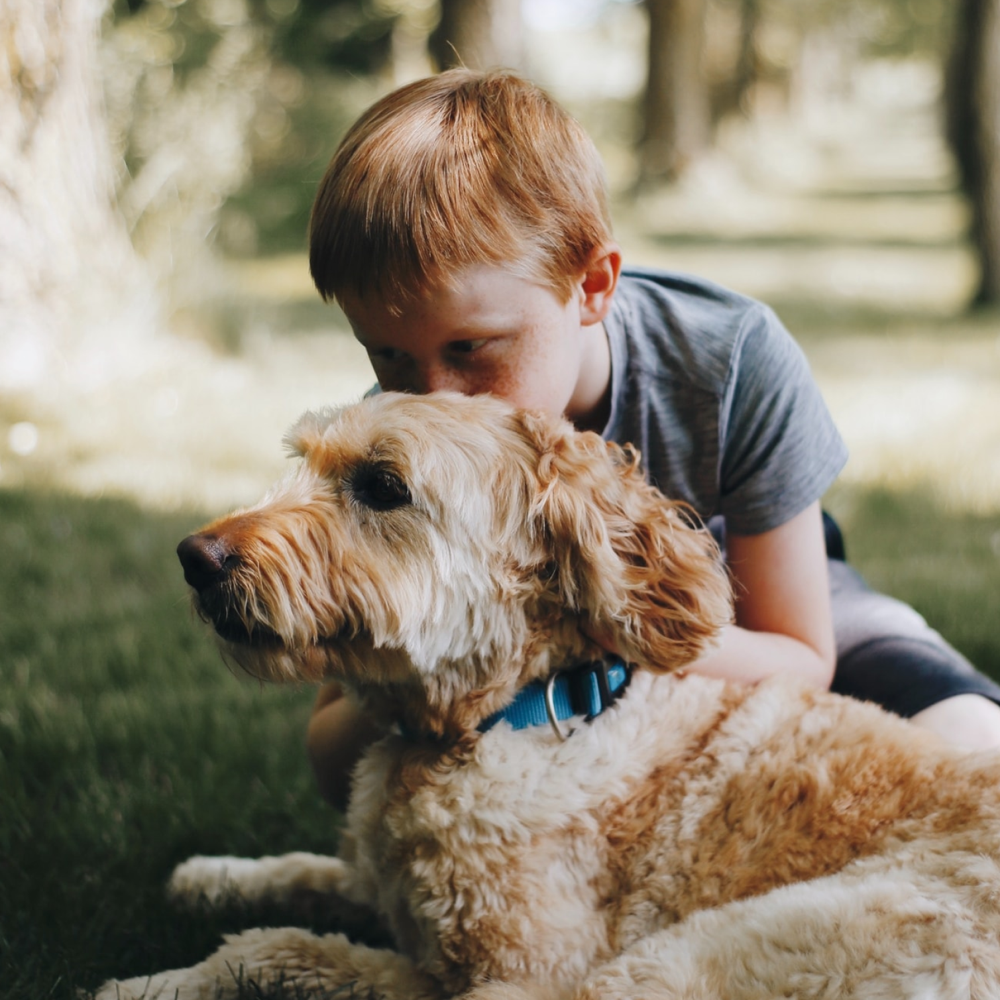
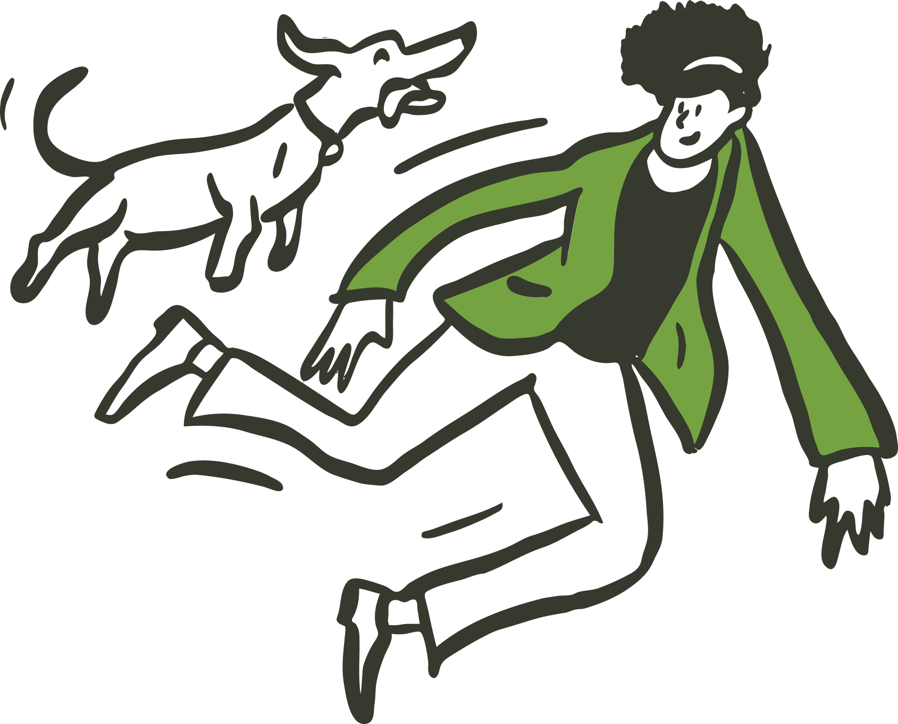

Adotar
é um ato de amor.
Não existem animais de rua, existem animais nas ruas e eles precisam de nós.

Adote um amigo
Acompanhe o Instagram da Casa do Vira-Lata para ver os animais disponíveis, preencha o cadastro e aguarde o retorno do status da adoção em até 24h pelo seu WhatsApp!
